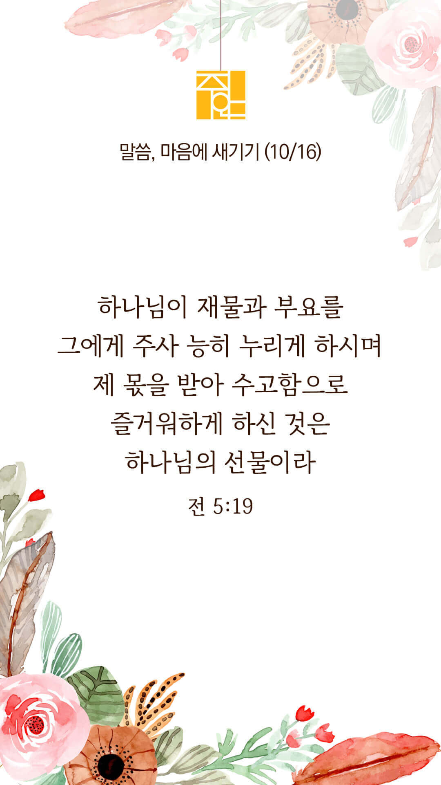

기도실 안내
2022년 10월 16일 (주일)
- 온라인 기도실은 온 회중이 함께 주님 앞으로 나아가는 자리입니다.
- 30분 정도 여유를 가지고 하시기 바랍니다.
- 말씀과 묵상, 찬양과 기도로 나아갑니다.
- 배경 음악이 나올 수 있습니다 볼륨을 조절해주세요.
준비가 되셨으면 아래의 버튼을 눌러주세요.
할렐루야
내 영혼아 여호와를 찬양하라
시 146:1
- 먼저 찬양의 가사를 천천히 읽어 봅시다.
주가 필요해
매일 스치는 사람들 내게 무얼 원하나
공허한 그 눈빛은 무엇으로 채우나
모두 자기 고통과 두려움 가득
감춰진 울음소리 주님 들으시네
캄캄한 세상에서 빛으로 부름 받아
잃어 버린 자들과 나누라고 하시네
할렐루야
내 영혼아 여호와를 찬양하라
시 146:1
- 먼저 찬양의 가사를 천천히 읽어 봅시다.
주의 사랑으로만 사랑할 수 있네
우리가 나눌 때에 그들 알겠네
그들은 모두 주가 필요해
깨지고 상한 마음 주가 여시네
그들은 모두 주가 필요해
모두 알게 되리 사랑의 주님
할렐루야
내 영혼아 여호와를 찬양하라
시 146:1
매일 스치는 사람들 by 클래식콰이어
위의 찬양이 끝나면 말씀읽기를 눌러주시면 됩니다.
주의 말씀은 내 발에 등이요
내 길에 빛이니이다 (시119:105)
오늘의 말씀입니다.
음악 소리가 크면 조절하시기 바랍니다.

마음의 묵상
전 5:19
“또한 어떤 사람에게든지 하나님이 재물과 부요를 그에게 주사 능히 누리게 하시며 제 몫을 받아 수고함으로 즐거워하게 하신 것은 하나님의 선물이라”
1. 무엇이 하나님의 선물이라고 말씀하나요?
2. 당신의 모든 소유와 수고와 즐거움이 하나님께서 주신 선물임을 믿으시나요?
3. “주님, 모든 것이 주님께로부터 왔음을 알고 감사하게 하소서” 묵상하며 기도합시다.
모든 것이 주님의 선물입니다.
회개, 삶의 방향을 바꾸는 결정
주님 앞에 엎드립니다.
“여호와여 나를 버리지 마소서
나의 하나님이여
나를 멀리하지 마소서 속히 나를 도우소서
주 나의 구원이시여”
- 시편 38:21-22 -
3분 정도 회개하며 주님 앞에 나아갑니다
사슴이 시냇물을 찾기에 갈급함 같이
시 42:1
- 다음의 말씀을 소리 내어 읽습니다.
[요한복음 3장 16-17절]
16 하나님이 세상을 이처럼 사랑하사 독생자를 주셨으니 이는 그를 믿는 자마다 멸망하지 않고 영생을 얻게 하려 하심이라
17 하나님이 그 아들을 세상에 보내신 것은 세상을 심판하려 하심이 아니요 그로 말미암아 세상이 구원을 받게 하려 하심이라
나라와 민족
1. 나라와 민족을 복음으로 변화시켜주소서
하나님 아버지,
핵무기와 미사일만 의존하는 북한 정권이 회개하게 하시고, 악에서 돌이키게 하소서. 죄 많은 우리 대한민국에도 긍휼을 베풀어주소서. 물질숭배, 우상숭배, 이단, 각종 죄악으로부터 돌아서게 하시고 하나님의 기쁨이 되는 백성이 되게 하옵소서. 그리하여 더 많이 선교하고 전도하는 우리 나라와 민족이 되게 하소서.
간절한 마음으로 3분 정도 기도합시다
영혼구원의 사명
2. 주안교회가 영혼구원의 사명을 끝까지 감당하게 하소서
하나님 아버지,
주안교회가 복음전파의 사명을 향한 부르심과 세우심의 뜻을 잊지 않게 하옵소서. 주님과의 첫 사랑을 회복하게 하시고 저희 안에 복음 전파의 열정을 지속적으로 불어넣어 주옵소서. 그리하여 저희의 약해진 믿음을 강건하게 회복시켜주시고 한 영혼을 천하보다 귀하게 여기시는 아버지의 마음을 품게 하여주소서.
간절한 마음으로 3분 정도 기도합시다
예수사랑큰잔치 인도하심
3. 2022년 예수사랑큰잔치를 친히 인도하여 주소서
하나님 아버지,
전도대상자들(VIP)을 주님 손에 올려드립니다. 그들을 치유하시고 하나님의 형상대로 회복시켜주옵소서. 창조주 되신 주님께서 그들의 영혼을 어루만져주시어 복음으로 거듭나게 하옵소서. 저희의 말과 힘으로는 그들을 변화시킬 수 없사오니 주님께서 친히 그들에게 임하셔서 복음에 대해 들을 귀와 부드러운 마음을 허락하여 주옵소서.
간절한 마음으로 3분 정도 기도합시다
예수사랑큰잔치 함께하심
4. 2022년 예수사랑큰잔치의 과정과 결과를 지켜주소서
하나님 아버지,
전도대상자들(VIP)이 그들을 향한 하나님의 사랑을 느끼고 초청주일과 초청의 날, 환영의 밤을 통해 교회에 나와 결신에 이를 수 있게 하소서. 전도대상자들(VIP)의 모든 환경과 마음을 다스려 주셔서 그들이 용기를 내어 교회로 올 수 있게 하시고, 못 오는 분들은 온라인으로 예배하게 하시며, 주님 영접하는 역사가 일어나게 하소서.
간절한 마음으로 3분 정도 기도합시다
말씀에 순종
5. 저희가 말씀에 순종하게 하소서
하나님 아버지,
우리를 먼저 주님의 제자로 불러주시니 감사합니다. 주님의 제자된 우리가 내 삶의 주변에서부터 시작하여 땅끝까지 복음을 증거하라는 주님의 지상대명령에 온전히 순종하게 하옵소서. 이를 위하여 무엇보다 먼저 다음 주에 있을 예수사랑 큰잔치 초청주일에 천하보다 귀한 한 영혼을 초청하여 생명을 구원하시는 하나님의 선교에 동참하는 선교적 삶을 살게 하옵소서.
간절한 마음으로 3분 정도 기도합시다
감사의 기도
- 오늘 기도를 인도하신 주님께 감사를 올려드립니다.
- 아래의 구절을 읽고 주님께 감사의 마음을 올려드립시다.
“내가 전심으로 여호와께 감사하오며
주의 모든 기이한 일들을 전하리이다”
- 시편 9장 1절 -
고요한 가운데 잠시 침묵하시기 바랍니다.
파송, 세상을 향하여
- 오늘의 온라인 기도를 마쳤습니다.
기도를 들으신 주님께서 평안히 가라 하십니다.
주님께서 우리와 함께 하시니 두려울 것이 없습니다.
새벽을 깨우며
- 새벽기도회 안내입니다.